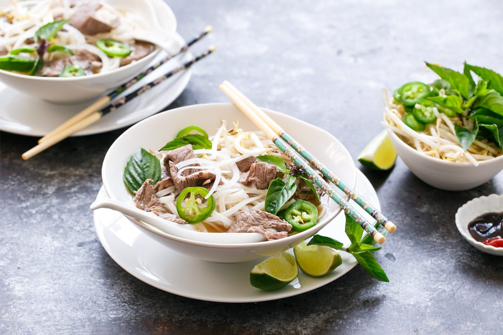

Home
Beef Pho

Description:
Beef pho, commonly known as "phở bò" in Vietnamese, is a traditional Vietnamese soup that consists of broth, rice noodles (bánh phở), herbs, and beef. It is a popular dish in Vietnamese cuisine and is often enjoyed as a breakfast meal, though it can be eaten at any time of the day.
Ingredients:
- Beef bones (such as knuckle or marrow bones)
- Oxtails
- 1 large onion, halved
- 1 piece of ginger, sliced
- 2 star anise pods
- 4 whole cloves
- 1 cinnamon stick
- 1 black cardamom pod (optional)
- 1 tablespoon coriander seeds
- 1 tablespoon fennel seeds
- 1.5 pounds beef brisket or flank steak
- Thinly sliced raw beef (such as eye of round or sirloin)
- 1 package flat rice noodles (bánh phở)
- Fish sauce
- Salt
- Sugar
- Bean sprouts
- Fresh Thai basil
- Fresh cilantro
- Fresh mint (optional)
- Lime wedges
- Green onions, sliced
- Fresh chili peppers, sliced
- Hoisin sauce (optional)
- Sriracha (optional)
Directions:
- Place beef bones and oxtails in a large pot and cover with cold water. Bring to a boil and cook for 5 minutes to remove impurities. Drain and rinse the bones under cold water.
- In a clean pot, add the rinsed bones, oxtails, halved onion, and sliced ginger. Fill with water and bring to a boil. Lower the heat and simmer for at least 3 hours, skimming off any foam.
- Toast the star anise, cloves, cinnamon stick, black cardamom (if using), coriander seeds, and fennel seeds in a dry pan over medium heat until fragrant, about 2-3 minutes. Add the toasted spices to the pot.
- After simmering for 3 hours, remove the bones and oxtails from the broth. Strain the broth through a fine mesh sieve or cheesecloth into another pot to remove solids. Return the clear broth to the stove.
- Add fish sauce, salt, and sugar to the broth to taste. Continue to simmer on low heat.
- Cook the flat rice noodles according to the package instructions. Drain and set aside.
- Slice the cooked beef brisket or flank steak thinly against the grain.
- To serve, place a portion of cooked rice noodles in each bowl. Top with slices of cooked brisket, thinly sliced raw beef, and green onions.
- Ladle the hot broth over the meat and noodles to cook the raw beef. Garnish with bean sprouts, Thai basil, cilantro, mint (if using), lime wedges, and sliced chili peppers.
- Serve with hoisin sauce and sriracha on the side for additional seasoning.